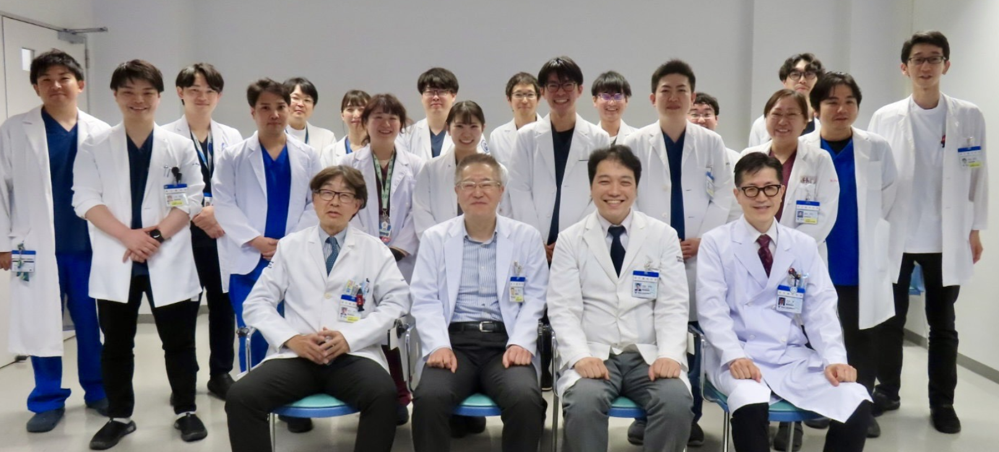

領域主任よりご挨拶
東海大学医学部付属病院は、神奈川県の県央・県西地区の中核病院として、多様な疾患や専門性の高い症例に対応しています。当科では「消化管」「肝臓」「胆膵」の3グループが連携し、幅広い臨床経験と専門性を身につけられる研修環境を整えています。日頃から声をかけ合い、和気あいあいとした雰囲気の中で、ともに学び、成長することを大切にしています。経験や習熟度に応じた指導を通じて、豊富な症例に主体的に関わる機会を支えます。学会活動や診療ガイドライン作成に携わる指導医とともに、診療・内視鏡の知識や技術を磨き、患者さんの心に寄り添う「良医」を目指します。経験や出身大学、性別、国籍を問わず、私たちと学び、働きたい先生を広く歓迎します。本院・八王子病院・関連病院の連携を活かし、臨床を深めたい、研究に取り組みたい、博士号を取得したいといった希望に応じて、研修や進路を一緒に考えます。見学や短期・長期の研修も受け付けていますので、お気軽にご相談ください。 岩崎栄典

消化器内科の活動報告
消化器内科での活動はインスタグラムで定期的に紹介しています。
臨床研究に関する公開情報
東海大学医学部 消化器内科
〒259-1193 神奈川県伊勢原市下糟屋143
東海大学医学部付属病院・医学部 代表
TEL：0463-93-1121（代表）
※診療や体調に関するお問い合わせは、各病院の消化器内科外来へお願いいたします。
消化器内科業績報告（責任著者・筆頭著者）
鶴谷康太・三島佑介・荒瀬吉孝・加川建弘の論文「Healthcare burden and clinical spectrum of symptomatic polycystic liver disease in Japan: a nationwide epidemiological survey.」が「Journal of Gastroenterology」に掲載されました。症状や合併症のある多発性肝嚢胞症について、国内の患者数、症状、治療状況を調べた全国疫学調査です。2023年に診療・経過観察を受けた患者数は推計3,570人で、人口100万人あたり28.6人でした。詳細な情報を得た557人では、腹部膨満・腹痛・嚢胞感染が多く、半数以上が肝嚢胞の治療を受けていました。疾患の重症度評価や診療体制の検討に役立つ基礎データを示しています。
半田修の論文「A Decade of Screening and Treating Helicobacter pylori Infection Among First-Year High School Students in Kyoto, Japan: Annual Trends in Infection, Consultation, and Eradication Success Rates (2015-2023)」が「Helicobacter」に掲載されました。京都府の高校1年生を対象に、2015～2023年のピロリ菌検診と除菌治療の経過を調べた研究です。確認された感染率は4.7%から1.5%へ低下し、治療方法の変更後には高い除菌成功率が得られました。一方、陽性判定後に医療機関を受診する割合の低下も明らかとなり、若年者の検診を治療につなげる支援の重要性を示しています。
佐野正弥・鈴木秀和の論文「Efficacy of deeper tissue sections for colorectal serrated polyps histologically diagnosed as normal mucosa.」が「Arab Journal of Gastroenterology」に掲載されました。内視鏡で鋸歯状ポリープが疑われたものの、病理で正常粘膜と判定された大腸病変に対し、追加の深切り切片で再評価した研究です。対象117病変のうち58病変で診断が変更され、病理切片の追加が診断の改善に役立つ可能性を示しました。変更の多くは過形成性ポリープで、SSLと再診断された病変は5病変でした。
岩崎栄典・川西彩の論文「Deus Sine Machina: Which Intelligence, for Whom.」が「Digestive Endoscopy」に掲載されました。内視鏡分野のAIを、医療資源の限られた地域で誰のために活用するかを論じた論考です。技術の性能だけでなく、地域ごとの疾病負担や未充足の医療ニーズを踏まえ、医療格差の縮小につながる導入と人材育成の重要性を提示しています。
寺邑英里香・松嶋成志・張つぼみ・伊藤裕幸・広瀬俊治・永田順子・今井仁・鈴木孝良の論文「Restoration of Gut Microbiota Dysbiosis by a Probiotic Lactobacillus paragasseri OLL2716 in Patients Being Treated with Low-Dose Aspirin and Acid-Suppressive Agents.」が「Digestion」に掲載されました。低用量アスピリンと酸分泌抑制薬を使用している患者において、乳酸菌Lactobacillus paragasseri OLL2716と腸内細菌叢の変化を検討した研究です。
鶴谷康太・三島佑介・荒瀬吉孝・加川建弘・広瀬俊治の論文「Rare Variants in PFIC-Related Genes Among Adults With Intrahepatic Cholestasis.」が「Hepatology Research」に掲載されました。成人の肝内胆汁うっ滞患者19人を対象に、進行性家族性肝内胆汁うっ滞症（PFIC）関連遺伝子の希少変異を調べた研究です。4人（21%）にヘテロ接合性変異を認め、いずれも薬物性肝障害と診断されていました。
鈴木秀和の論文「Evolving landscape of potassium-competitive acid blockers: toward disease-specific use beyond acid suppression.」が「Journal of Gastroenterology」に掲載されました。酸分泌抑制薬P-CABの、疾患に応じた使い分けと今後の展望を整理した総説です。
岩崎栄典の論文「Clinical outcomes of endoscopic papillectomy for ampullary adenoma and adenocarcinoma: a multicenter retrospective study in Japan.」が「Gastrointestinal Endoscopy」に掲載されました。国内22施設の内視鏡的乳頭切除術の成績を検討した後ろ向き研究です。長期成績を解析した776人の3年累積再発率は20%で、切除断端が不明・陽性の場合は再発リスクが高くなりました。断端陰性でも再発がみられ、治療後の長期的な経過観察の重要性を示しています。
伊藤裕幸・小村侑司・山口徹・張つぼみ・永田順子・広瀬俊治・鈴木孝良の論文「Treatment Outcomes of Durvalumab Combination Therapy in Patients with Biliary Tract Cancer.」が「Tokai Journal of Experimental and Clinical Medicine」に掲載されました。八王子病院の胆道がん患者19人を対象に、デュルバルマブ併用療法の治療成績を検討した後ろ向き研究です。
半田修・鈴木秀和の論文「Guidelines for the management of Helicobacter pylori infection in Japan: 2024 revised edition.」が「Journal of Gastroenterology」に掲載されました。日本のピロリ菌感染症の診断・治療に関する2024年改訂ガイドラインを紹介した論文です。
鈴木秀和の論文「Helicobacter pylori Management in Older Adults: Current Perspectives From Japan.」が「Korean Journal of Helicobacter and Upper Gastrointestinal Research」に掲載されました。高齢者におけるピロリ菌診療について、日本の現状と考え方を整理した総説です。
鶴谷康太・加川建弘の論文「Metabolic Vulnerability and Tamoxifen Hepatotoxicity: The Importance of Multidisciplinary Collaboration.」が「Hepatology Research」に掲載されました。タモキシフェンによる肝障害について、代謝面のリスクと多職種連携の重要性を論じた論考です。
上田孝・鈴木秀和の論文「Helicobacter pylori Exploit Short-Chain Fatty Acids-Induced CAPZA1 Overexpression to Emerge CD44v9-Positive Stemness.」が「Gastro Hep Advances」に掲載されました。短鎖脂肪酸によるCAPZA1発現と、ピロリ菌に関連する胃上皮細胞の幹細胞様の性質を検討した基礎研究です。
上田孝・佐野正弥・鈴木秀和の論文「Analysis of Risk Factors for Colorectal Cancer Associated with Ulcerative Colitis Using Machine Learning: A Retrospective Longitudinal Study Using a National Database in Japan.」が「Cancers」に掲載されました。国内のデータベースと機械学習を用い、潰瘍性大腸炎に関連する大腸がんの危険因子を検討した研究です。
荒瀬吉孝・三島佑介・鶴谷康太・加川建弘の論文「Denosumab versus zoledronic acid for osteoporosis treatment in patients with primary biliary cholangitis (the DELTA Study): A multicenter, non-inferiority randomized trial.」が「Hepatology Communications」に掲載されました。原発性胆汁性胆管炎に伴う骨粗鬆症を対象に、デノスマブとゾレドロン酸を比較した多施設非劣性ランダム化試験です。
加川建弘の論文「Identification and Characterization of Three Novel Biomarkers for Mixed/Cholestatic Drug-Induced Liver Injury.」が「Hepatology Research」に掲載されました。混合型・胆汁うっ滞型の薬物性肝障害に関する、3つの新しいバイオマーカーの同定と特徴の解析を行った研究です。
2025.06.17
三島佑介の博士学位論文「Liver-specific Nr1h4 deletion in mice with human-like bile acid composition causes severe liver injury」が「Journal of Lipid Research」に採択されました。ヒトに近い胆汁酸の組成を持つマウスを用い、胆汁酸の代謝を調節する遺伝子Nr1h4（FXR）の働きを肝臓で失わせると、重い肝障害が生じることを示した研究です。胆汁うっ滞による肝障害の仕組みの解明や、新たな治療法の開発につながる知見です。
伊藤裕幸・小村侑司・山口徹・張つぼみ・永田順子・広瀬俊治・鈴木孝良の論文「Repeated Delayed Bleeding following Treatment for a Pancreatic Pseudocyst during Lumen-Apposing Metal Stent Placement: A Case Report.」が「Case Reports in Gastroenterology」に掲載されました。膵仮性嚢胞に対する内視鏡治療で、管腔密着型金属ステント（LAMS）留置中に遅発性出血を繰り返した症例の報告です。
消化器内科業績報告（共同研究）
荒瀬吉孝・加川建弘の論文「Skeletal Muscle Loss with Atezolizumab-Bevacizumab versus Lenvatinib in Unresectable HCC.」が「JHEP Reports」に掲載されました。切除不能肝細胞がんにおける骨格筋量の減少について、アテゾリズマブ・ベバシズマブ併用療法とレンバチニブを比較した研究です。
岩崎栄典の論文「Clinical outcomes and risk factors for local residual/recurrent tumors after endoscopic submucosal dissection including major papilla for laterally spreading ampullary tumors.」が「Endoscopy」に掲載されました。側方進展型乳頭部腫瘍に対する、主乳頭を含む内視鏡的粘膜下層剝離術の治療成績と、局所遺残・再発の危険因子を検討した研究です。
永田順子・広瀬俊治・伊藤裕幸・鈴木孝良の論文「Selective endoscopic nasobiliary drainage to determine the resection range for intraductal papillary neoplasm of the bile duct with an initially indeterminate primary site.」が「Clinical Journal of Gastroenterology」に掲載されました。八王子病院の消化器外科との共同研究です。原発部位の判断が難しい胆管内乳頭状腫瘍に対して、選択的な内視鏡的経鼻胆道ドレナージを切除範囲の決定に用いた症例を報告しています。
岩崎栄典の論文「A novel combination therapy of endoscopic submucosal dissection including the papilla and intraductal radiofrequency ablation (with video).」が「Gastrointestinal Endoscopy」に掲載されました。乳頭部を含む内視鏡的粘膜下層剝離術と、胆管内ラジオ波焼灼療法を組み合わせた治療法を、動画とともに紹介した報告です。
鈴木秀和の論文「Biopsy-Confirmed Serofrequency of Celiac Disease among Patients with Disorders of Gut-Brain Interaction in Japan: A Multicenter Cross-Sectional Cohort Study.」が「Inflamm Intest Dis」に掲載されました。日本の脳腸相関異常症患者を対象に、セリアック病の頻度を検討した多施設共同研究です。
鈴木秀和の論文「Asian Neurogastroenterology and Motility Association and Asia-Pacific Association of Gastroenterology Chronic Constipation Consensus 2026.」が「J Neurogastroenterol Motil」に掲載されました。アジア太平洋地域における慢性便秘の診療について、専門家による合意と推奨をまとめた報告です。
鶴谷康太・加川建弘の論文「Nivolumab Plus Ipilimumab for Unresectable Hepatocellular Carcinoma in Early Real-World Clinical Practice: A Multicenter Analysis of Efficacy and Safety.」が「Cancers」に掲載されました。切除不能肝細胞がんに対するニボルマブ・イピリムマブ併用療法の有効性と安全性を、導入初期の実臨床で検討した多施設研究です。
鈴木秀和の論文「Methods to build and maintain effective clinician-patient relationships for adults with disorders of gut-brain interaction (DGBI): a systematic review.」が「J Gastroenterol」に掲載されました。脳腸相関異常症の成人患者と医療者が良好な関係を築き、維持する方法を整理した系統的レビューです。
鈴木秀和の論文「Review Article: Implementation Challenges in Helicobacter pylori Management: Bridging Evidence and Real-World Practice.」が「Aliment Pharmacol Ther」に掲載されました。ピロリ菌診療の科学的根拠を実際の診療に活かすうえでの課題を整理した総説です。
鈴木秀和の論文「Mechanism analysis of transgene expression induced by chitosan/hyaluronic acid nanoparticles in CD44v9/RHAMM co-expressed gastric cancer cells: contribution of hyaluronic acid to RHAMM-mediated intracellular transport.」が「Glycoconj J」に掲載されました。胃がん細胞を対象に、キトサン・ヒアルロン酸ナノ粒子による遺伝子導入と細胞内輸送の仕組みを検討した基礎研究です。
岩崎栄典の論文「Pancreatic Atrophy: A Narrative Review and Surgical Interpretation.」が「Annals of Gastroenterological Surgery」に掲載されました。膵萎縮について、既存の知見と外科診療における意義を整理した総説です。
鈴木秀和・佐野正弥・上田孝の論文「Symptom Patterns Outside the Rome IV Consensus in Eastern and Western Patients With a Disorder of Gut-Brain Interaction.」が「Am J Gastroenterol」に掲載されました。東洋と西洋の脳腸相関異常症患者における、Rome IVの枠組みに収まらない症状のパターンを検討した国際共同研究です。
鈴木秀和の論文「Asian Pacific Association of Gastroenterology task force recommendations on surveillance for Helicobacter pylori associated gastric premalignant conditions.」が「Gut」に掲載されました。ピロリ菌に関連する胃の前がん病変の経過観察について、アジア太平洋地域の専門家による推奨をまとめた報告です。
半田修の論文「Metagenomic analysis of the intragastric and oral microbiome associated with gastric carcinogenesis after Helicobacter pylori eradication.」が「Gastric Cancer」に掲載されました。ピロリ菌除菌後の胃がんと、胃内・口腔内の細菌叢との関連を検討した研究です。
鈴木秀和の論文「Gastroduodenal Disorders.」が「Gastroenterology」に掲載されました。胃・十二指腸の疾患について整理した総説です。
鈴木秀和の論文「Second Asian Consensus Report on Functional Dyspepsia (2025): Updated Recommendations.」が「J Gastroenterol Hepatol」に掲載されました。機能性ディスペプシアについて、アジアの専門家による推奨を更新したコンセンサス報告です。
岩崎栄典の論文「Recombinant Human Soluble Thrombomodulin and In-Hospital Mortality in Acute Pancreatitis With Disseminated Intravascular Coagulation: A Japanese Nationwide Study.」が「Critical Care Medicine」に掲載されました。播種性血管内凝固（DIC）を伴う急性膵炎において、遺伝子組換えヒト可溶性トロンボモジュリンの使用と院内死亡との関連を検討した国内の全国規模の研究です。
鈴木秀和の論文「Bali Chronic Constipation Roundtable Report: Chronic Constipation Management in Asia.」が「J Neurogastroenterol Motil」に掲載されました。アジアにおける慢性便秘の診療をテーマに、専門家の議論をまとめた報告です。
加川建弘の論文「Validation of Liquid Biopsy Using a Methylated SEPT9 Assay and Integrated Index for Detecting Hepatocellular Carcinoma.」が「Hepatology Research」に掲載されました。肝細胞がんの検出に向け、メチル化SEPT9測定と統合指標を用いたリキッドバイオプシーを検証した研究です。
岩崎栄典の論文「Biliary stents reshape the bile microbiome in the absence of cholangitis.」が「Endoscopy International Open」に掲載されました。胆管炎を認めない状況で、胆道ステントと胆汁中の細菌叢の変化との関連を検討した研究です。
半田修の論文「Questionnaire Survey on the Current Status of Advanced Therapy for Inflammatory Bowel Disease in Asia.」が「Digestion」に掲載されました。アジアにおける炎症性腸疾患の先進的治療の実施状況を、質問票を用いて調査した研究です。
岩崎栄典の論文「Clinical manifestations of immunoglobulin G4-related gastrointestinal disease: a nationwide multicenter retrospective study.」が「Journal of Gastroenterology」に掲載されました。IgG4関連消化管疾患の臨床像を検討した、全国多施設の後ろ向き研究です。
加川建弘の論文「Employment Status of Patients With Liver Disease: A Nationwide Questionnaire Survey in Japan.」が「Hepatology Research」に掲載されました。国内の肝疾患患者の就労状況を、全国規模の質問票調査で検討した研究です。
半田修の論文「Kyoto Classification-Based Predictive Factors Associated with the Development of Gastric Cancer After Helicobacter pylori Eradication: A Prospective Multicenter Observational Study.」が「Diagnostics」に掲載されました。胃炎の京都分類に基づき、ピロリ菌除菌後の胃がん発症に関連する予測因子を検討した前向き多施設観察研究です。